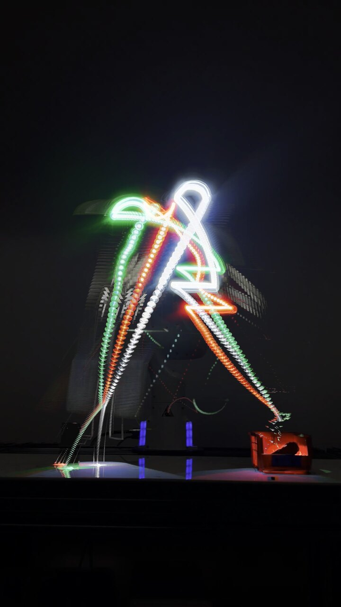
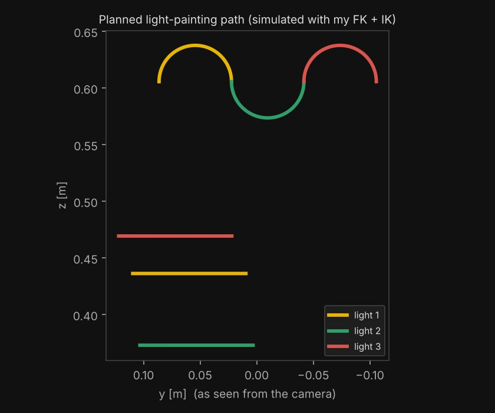
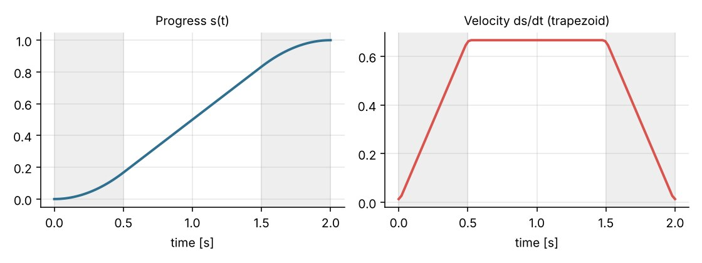

Franka Arm Light Painting


Overview
The capstone for Robot Kinematics & Dynamics: program a 7-joint Franka Panda arm to pick up lights and "draw" with them in the air while a camera takes a long-exposure photo. We built every layer ourselves over three milestones (forward kinematics, smooth trajectories, then inverse kinematics) and combined them into a full pick, draw and drop sequence with three different lights.
1. Forward kinematics
- Implemented forward kinematics from the Franka's Denavit–Hartenberg parameters (Craig/modified convention), chaining one transform per joint to get the gripper's pose.
- Validated it on the real robot: for four test configurations, including two very different joint configurations that reach the same pose, our computed position matched the robot's own reading to within 0.04 mm.
2. Smooth trajectories
- Wrote a joint-space trajectory generator with a trapezoidal velocity profile: accelerate for 0.5 s, cruise, decelerate for 0.5 s, sampled every 0.02 s to match the robot's control rate. Velocity is normalized so the motion ends exactly at the goal.
- Demonstrated a four-waypoint loop and a flashlight pick-and-place on the robot. Early on the arm overshot its goal until we reduced the peak velocity.
- Built a standby/recovery mode between every step (continue, retry the move, or safely quit), which made hardware debugging much faster, e.g. recovering when the gripper hadn't initialized.
- Computed the Jacobian both analytically (from each joint's axis and position) and by finite differences, and checked that they agree.

3. Inverse kinematics and drawing
- Implemented numerical inverse kinematics: compare the current pose to the target (position error plus an axis–angle rotation error), then update the joints using a damped least-squares step on the Jacobian until the error is below 0.1 mm.
- Straight lines: interpolate the gripper's position from start to goal with orientation held fixed, and solve IK at each waypoint, warm-starting from the previous solution so the arm moves smoothly.
- Curves: a general function that follows any path given as a function of progress, used to draw the 3.2 cm-radius semicircles in the vertical plane facing the camera.
4. The full sequence
For each of the three lights: move above the holder, lower and grip, lift, travel to the drawing start, draw a semicircle, move to the line start, draw a line, then drop the light in a bin and fetch the next. Every step waits for an operator's go-ahead, with the option to retry.